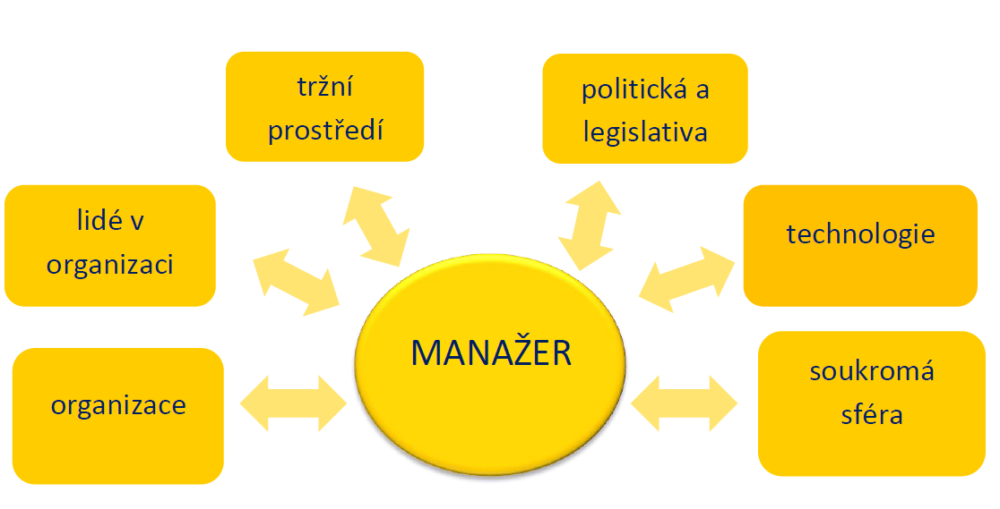

Manager challenge centrum
Eyrie Centrum moderního podnikání pro Vás připravila specifický manažeský program, který je sestaven na základě moderních trendů a poznatků o managementu a fungování firem a trhu.
Centrem je osobnost manažera, která ovlivňuje a je ovlivňována blízkým i vzdáleným okolím.
Program pomáhá vrcholovým manažerům v hledání cest, jak být efektivní v obou směrech a současně nemuset potlačovat svoji osobnost, ale využívat co nejlépe svoje silné stránky. Program zcela respektuje požadavky vrcholových manažerů na individuální a partnerský přístup, praktický dopad, časovou variabilitu, inspiraci a hledání netradičních řešení.
class="justify"Unikátní organizací a možností volby mezi dvěma přístupy, standardní a akcelerovaný, vychází vstříc potřebám různých typů lidí i způsobu jejich práce.

|
Tématický okruh |
Obsah |
|
Manažer v interakci s okolím |
Přesvědčivá prezentace vlastních myšlenek |
|
Manažer a organizace |
Firemní kultura a toky vnitrofiremní komunikace |
|
Manažer a leadership |
Cíle leadershipu, znaky a charakteristika |
|
Manažer a finance |
Právní úprava podnikání v ČR |
|
Manažer stratég |
Orientace v tržním prostředí |
|
Manažer a jeho osobnost |
Osobní a pracovní cíle, priority a cesta jejich dosažení |
Absolvent programu najde odpovědi na otázky:
- Jak udržet klíčové pracovníky?
- Jak mít loajální zaměstnance, kteří firmu podrží v dobách nouze?
- Jak vychovávat následníky?
- Jak předávat pravomoci o rozhodování?
- Jak mít výkonné a motivované lidi?
- Jak mít lidi kreativní, myslící?
- Jak se vymanit z operativy?
- Jak být přesvědčivý?
- Jak dělat nepopulární opatření bez ztráty „květinky“?
- Jak najít zdroje na rozvojové aktivity?
- Jak vytvářet strategie a plány?
- Jak nastavit efektivní organizační strukturu?
Charakteristika programu
- Program je rozdělen do celkem 6ti tematických okruhů, vybraných podle činností manažera v jeho sférách vlivů
- Jednotlivé okruhy lze absolvovat v libovolném pořadí
- V každém okruhu se využívá kombinace metod:
- E-learningová příprava zaměřená na upevnění znalostí
- Společné pracovní workshopy pro rozvoj dovedností, diskusi a vzájemnou inspiraci
- Individuální sezení s koučem, která pomáhají hledat cestu ke změnám v chování a jednání
- Follow up setkání pro sdílení zkušeností
- Každý účastník zahájí program individuálním vstupním motivačním sezením s koučem, s kterým si zvolí svoje priority. Kouč mu pomůže vypracovat vhodný sled okruhů a vybrat podle potřeb a osobnosti účastníka standardní nebo akcelerovaný přístup k výuce. Již před kurzem dostanou účastníci přístup do on-line prostoru
- Před zahájením projdou vstupním testem, zaměřeným na typologii osobnosti – výstupy obdrží písemně a jinak je zná jen lektor, který jim přizpůsobí svoji práci
- Do tří dnů po setkání volá lektor každému z účastníků a dává mu individuální zpětnou vazbu na jeho práci a případné vystoupení na setkání
- Lektor pracuje vždy s asistentem, který točí, rozdává a organizuje
- Pokud je nějaké video, dostává každý své vystoupení na CD